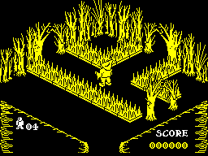
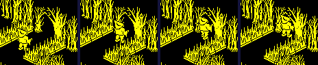
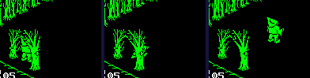

| Pentagram | Rooms and doorways |
Pentagram's world is 139 rooms joined by arched doorways. A room is built from a record in the room directory every time he enters it; a doorway is two pillars, and the first of them decides when he has gone through and where to. This page follows both, and a real walk from one room to the next, run in the game's own code.
ENTER_ROOM clears the screen buffer and calls BUILD_ROOM, which clears every object record but the player's two, finds his room in the directory (ROOMS) by stepping from record to record until the number matches, and fills the records from the top down. Its third byte gives the room's colour and one of three sizes from ROOM_SIZES, copied to ROOM_EXTENT for the walls:
| Size | Half-size in U | Half-size in V | Floor | U runs | V runs | Rooms |
|---|---|---|---|---|---|---|
| 0 | 64 | 64 | 128 | 64 to 192 | 64 to 192 | 116 |
| 1 | 32 | 64 | 128 | 96 to 160 | 64 to 192 | 13 |
| 2 | 64 | 32 | 128 | 64 to 192 | 96 to 160 | 10 |
Then the scenery: two bytes an entry, a scenery template and one more byte, up to an $FF. A scenery template (SCENERY_TABLE) is a list of pieces, each a whole record's first eight bytes -- graphic, U, V, Z, the half-sizes, the flags -- and every piece of the entry is given the entry's second byte as its +$08, which for any other object is its room. For a doorway, that byte is the room the doorway leads to. Then the objects, in groups: a header (the template and how many) and a position byte for each copy; an object template (OBJECT_TABLE) gives the graphic, the half-sizes and the flags, and the position byte the cell: U = 72 + 16 times bits 0-2, V = 72 + 16 times bits 3-5, Z = the floor + 12 times bits 6-7. QUEST_INTO_ROOM then adds the quest things lying in the room, and ADJUST_PLYR_UVZ_FOR_ROOM_SIZE puts the player in the doorway he came in by. The record format has its own page, room structure.
Room 100, one of the four a game can start in, read the way the builder reads it when this page was built. Its scenery:
| Template | The byte after it | Its pieces' graphics |
|---|---|---|
| 0 | 110 | 7, 6 |
| 1 | 101 | 7, 6 |
| 3 | 99 | 7, 6 |
| 10 | 12, 13, 14, 13, 14, 15 | |
| 11 | 12, 13, 14, 13, 14, 15 |
Its objects (U, V, Z):
| Template | Graphic | Update routine | Copies | At |
|---|---|---|---|---|
| 3 | 23 | STILL_DEADLY | 8 | (72, 104, 128), (88, 104, 128), (104, 104, 128), (120, 104, 128), (136, 104, 128), (152, 104, 128), (168, 104, 128), (184, 104, 128) |
| 3 | 23 | STILL_DEADLY | 8 | (72, 152, 128), (88, 152, 128), (104, 152, 128), (104, 168, 128), (104, 184, 128), (152, 184, 128), (152, 168, 128), (152, 152, 128) |
| 3 | 23 | STILL_DEADLY | 2 | (168, 152, 128), (184, 152, 128) |

Room 100 as the game draws it on entering, in a simulator when this page was built.
Every doorway is a pair of pillars from a scenery template: a first pillar, graphic 6 or 8, and a second, 7 or 9, 13 units along the wall. The second only sets its drawing offset (SECOND_PILLAR). The first (FIRST_PILLAR) does the work, every turn: it works out the point in the middle of the arch and keeps it in its own +$09 to +$0B, the step bytes a pillar never uses; then HANDLE_EXIT_SCREEN asks, of the player's legs only -- record 0, graphics 16 to 47 (so not the puff he becomes when he dies), with bit 3 of the flags -- whether he is within the doorway's limits of that point (IS_NEAR_TO). If he is, bit 0 of his flags is set, which switches off the walls for his next move, and one of four routines picked by the way he faces (SCREEN_MOVE_TBL) asks whether he is now wholly past the wall. Near the arch, ARCH_NUDGE_TO_CENTRE also sets a nudge of one unit towards its middle line in his +$0E or +$0F, which CALC_PLYR_DUV adds to his step: he slides into line with the arch as he walks through it.
The arches in the rooms as built (the first pillars of all 290 doorways, read from the object records after the game's own builder had run for every room):
| Wall | First pillar at | Mirrored | Doorway reaches | Leaving writes | He arrives at | Pillar heights (Z) | Doorways |
|---|---|---|---|---|---|---|---|
| low U | U = 59 | no | 15 in U, 6 in V | U = $00 | high U | 128, 176 | 72 |
| high U | U = 197 | no | 15 in U, 6 in V | U = $FF | low U | 128, 176 | 72 |
| low V | V = 59 | yes | 6 in U, 15 in V | V = $00 | high V | 128, 176 | 73 |
| high V | V = 197 | yes | 6 in U, 15 in V | V = $FF | low V | 128, 176 | 73 |
Every first pillar stands at 59 or 197, just outside a wall at 64 or 192. The 23 narrow rooms have theirs only at the two ends of their long axis, where the walls are at 64 and 192, never in the walls at 96 or 160 -- which matters, because the arrival code below only looks for an arch at U or V of 192 or more, or below 64.
The four exit routines (EXIT_LOW_U, EXIT_HIGH_U, EXIT_HIGH_V, EXIT_LOW_V) compare his position after this turn's move with the wall he faces: out at low U when his far edge (U plus his half-size) is below the wall, at high U when his near edge is at or beyond it, and the same for V. Then EXIT_SCREEN: his room becomes the pillar's +$08; the coordinate he left by is set to a marker, 0 or $FF, which is not a position but a note of the wall; the top four bits of +$0C are set to 3, three turns in which he walks on by himself; both his records are copied over the player template at PLAYER_TEMPLATE; and two return addresses are dropped from the stack by hand and the game jumps to GAME_LOOP to build the new room.
There, ADJUST_PLYR_UVZ_FOR_ROOM_SIZE sees the marker and puts him in the doorway of the opposite wall: the coordinate becomes 128 plus or minus (the room's half-size - 2 + his half-size), his inner edge two units inside the wall, and FIND_ENTRY_ARCH lines him up with the arch in that wall -- the middle of it along the wall, and its pillar's Z -- by looking at the first pillars of the room's first four scenery entries. The code takes doorways to be a room's first scenery entries.
Knight Lore has the same arches, the same switching off of the walls (its collision page) and the same markers, but its player's own move decides the exit, from his position plus the step, and the next room is his room number plus or minus 1 or 16: its castle is a grid (its map). In Pentagram the move leaves it alone (EXIT_STUB is a bare RET where Knight Lore's check was called), the pillar decides from where he is after the move, and the next room is whatever the pillar carries: the rooms are not on a grid at all.
In a simulator when this page was built: a game started, room 100 entered by the game's own restart, and the player then put at U 131, V 160 facing +V -- his graphic made 32 and his flags not mirrored, which is how the game stores that facing -- three units off the middle line of the arch in the wall at high V. Then walk (A) held for 30 turns; nothing else touched but his lives, topped up each turn, until on turn 32 he was killed by writing bit 6 of his +$0D, as anything deadly does:
| Turn | Room | U | V | Z | Template: room, V | What is going on |
|---|---|---|---|---|---|---|
| 0 | 100 | 131 | 160 | 128 | 100, V 128 | |
| 7 | 100 | 131 | 181 | 128 | 100, V 128 | |
| 8 | 100 | 131 | 184 | 128 | 100, V 128 | in the doorway: +$07 bit 0; nudge -1 in U |
| 9 | 100 | 130 | 187 | 128 | 100, V 128 | in the doorway: +$07 bit 0; nudge -1 in U |
| 10 | 100 | 129 | 190 | 128 | 100, V 128 | in the doorway: +$07 bit 0; nudge -1 in U |
| 11 | 100 | 128 | 193 | 128 | 100, V 128 | in the doorway: +$07 bit 0 |
| 12 | 100 | 128 | 196 | 128 | 100, V 128 | in the doorway: +$07 bit 0 |
| 13 | 110 | 128 | 61 | 128 | 110, V 255 | in the doorway: +$07 bit 0; walks in by himself: 3 in +$0C |
| 14 | 110 | 128 | 64 | 128 | 110, V 255 | in the doorway: +$07 bit 0; walks in by himself: 2 in +$0C |
| 15 | 110 | 128 | 67 | 128 | 110, V 255 | in the doorway: +$07 bit 0; walks in by himself: 1 in +$0C |
| 16 | 110 | 128 | 70 | 128 | 110, V 255 | in the doorway: +$07 bit 0 |
| 30 | 110 | 128 | 112 | 128 | 110, V 255 | |
| 33 | 110 | 128 | 112 | 128 | 110, V 255 | killed: bit 6 of +$0D written |
| 41 | 110 | 128 | 61 | 128 | 110, V 255 | in the doorway: +$07 bit 0; walks in by himself: 3 in +$0C; a life later: the template copied back |
He is in the doorway from turn 8, and the arch nudges him back onto its middle line, U 128, a unit a turn. On turn 13 he is in room 110, at V 61: his inner edge two units inside that room's wall at 64. The template now says room 110 with V $FF, the marker, not a position. He walks in for three turns by himself, and on under the key. Killed, he becomes a puff; when it is over both his records are empty, the main loop starts a life, and the life starts from the template: the same room, the marker again, and so the same arrival code puts him back in the doorway he came in by, at U 128, V 61, on turn 41.

Room 100, turns 0, 8, 11, 12: walking to the arch, and sliding onto its middle line.

Room 110, as turns 14, 17, 30 begin: coming in, and walking on.
Room 110, as turns 35 and 42 begin: the puff, and a life later back in the doorway.
For each of the 290 doorways, the marker its exit writes was put in the player's record with the room it leads to, and ENTER_ROOM run on its own; then his position was compared with the arches of the room he arrived in. 290 put him on the middle line of an arch in the opposite wall that leads straight back; 0 on an arch leading somewhere else; and 0 found no arch at all in that wall. So every doorway in the game is two-way, and the arrival code's own limits -- the first four scenery entries, the fixed 64 and 192 -- never come into play.